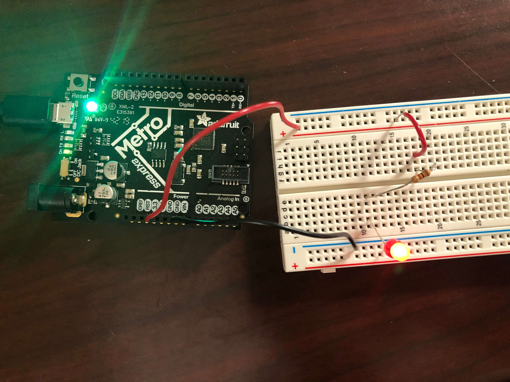
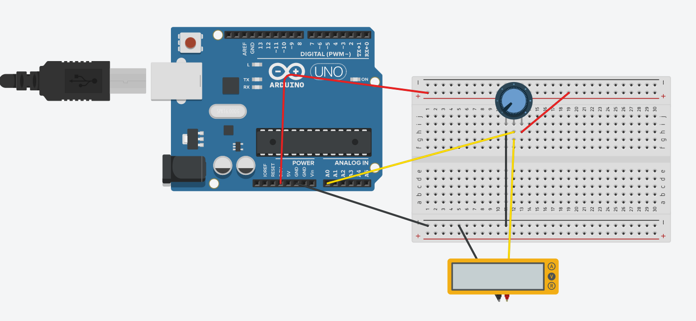
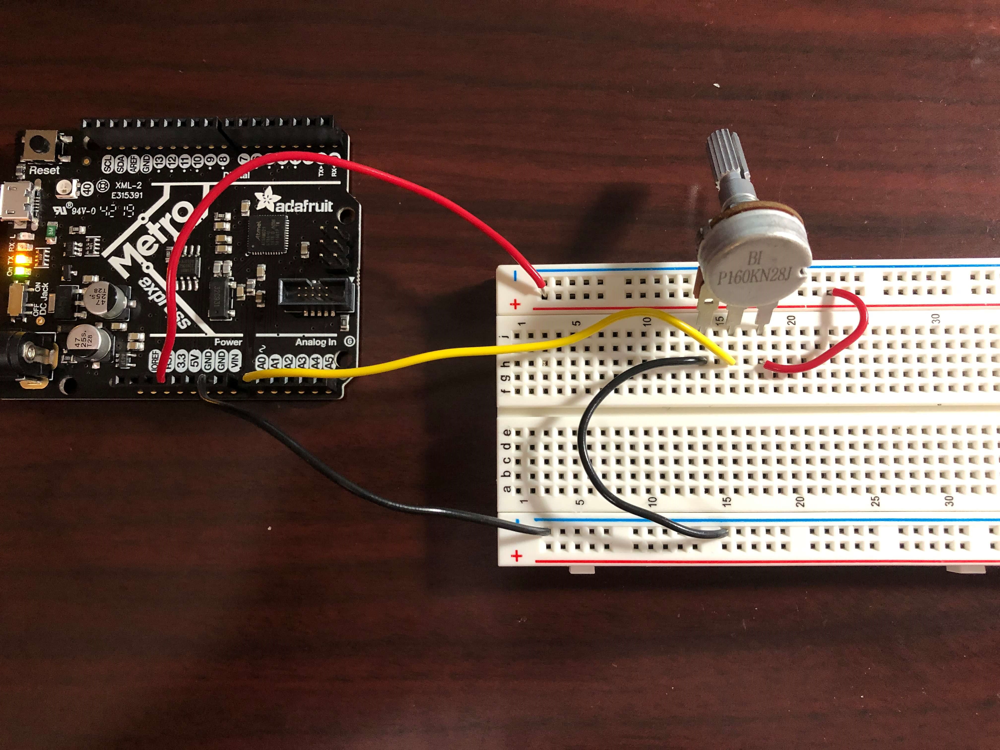
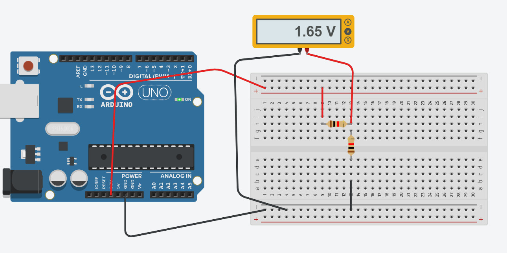
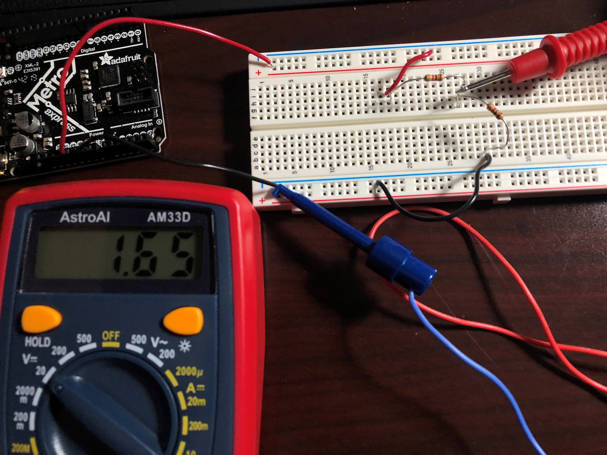
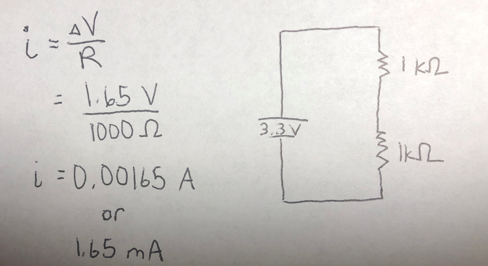

This week's topic was really cool since I've done some calculations with Ohm's law and Kirchoff's Laws for AP Physics I, but we didn't actually work with circuits since school was closed due to COVID-19. I'm glad that I was able to have the experience of physically creating circuits on a breadboard.
To start off, during class we created an LED circuit. I had to cut and strip red and black wires initially and learned about the anatomy of a breadboard (i.e. terminal strips and power rails). When plugging wires into the breadboard itself, I've found that I have to move and twist the wires in order to snugly slide into the holes. I didn't expect it to be so difficult to plug wires into. The Metro M0 board supplied power to the breadboard when I connected the 3.3 V pin to a power rail and the ground pin to another power rail.

During the lab section, we made circuits with potentiometers, which is a voltage divider that can provide a variable voltage when you turn the knob. After modeling the circuit with the potentiometer on Tinkercad, I stripped some wires and built the circuit myself.
 
By running the AnalogReadSerial program on the Metro M0 Express, the Metro M0 Express could be used as a voltmeter.
However, I also used the multimeter to measure the voltage in the circuit. When turning the dial on the potentiometer, I could change the voltage, as demonstrated by the multimeter.
Finally, I created a voltage divider with two 1K resistors. Then, I measured the voltages after the first resistor. My measured voltage matched the predicted voltage on Tinkercad!


Here are my calculations with Ohm's Law to calculate the current running through the second resistor in series.
